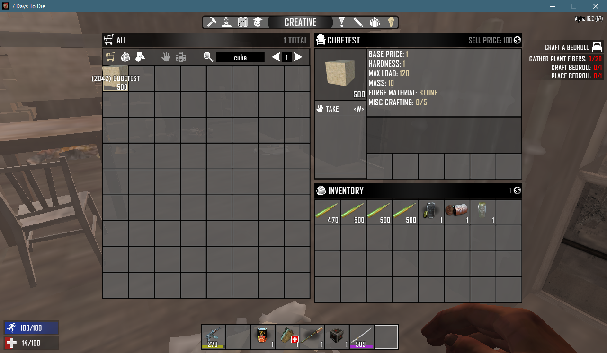

Once you have completed all the steps in the "Building for the first time" option, it's time to trigger your first SDX compile!
Click on the white square to enable the Cube Mod to enable it.
And click on Build.
The SDX Build starts by switching from the "Mods" tab to the "Output" tab.
You'll see the SDX compile start, and display the log file as it does its actions.
When SDX is finished, you'll see this at the end of the Output window
SDX is now compiled into your Working copy of the game.
You can now hit the Play button to launcher the game. Spawn a new world, or log into an existing one, and go into the Creative Menu. You'll see that the cube is now available.

And showing the cube in hand:
Created with the Personal Edition of HelpNDoc: What is a Help Authoring tool?